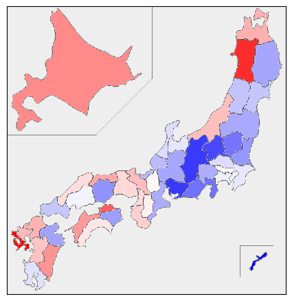
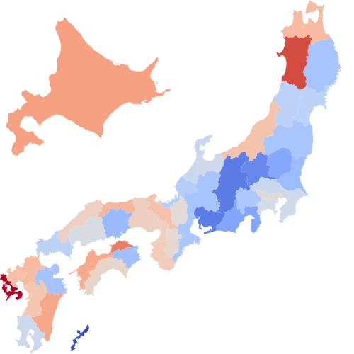

県別データの可視化で紹介されている japanmap ライブラリを使って日本地図を描いてみます。
まずは pip install japanmap でインストールします。インポートして、まずは都道府県名を列挙してみます。
import japanmap as jp jp.pref_names
['_', '北海道', '青森県', '岩手県', ……中略…… '沖縄県']
最初（第0要素）に無意味なものが入っているのは、都道府県コードと要素番号を一致させるためのようです。
PNG画像の白地図を描いてみます：
import matplotlib.pyplot as plt plt.imshow(jp.picture())
例として、がんの分布で紹介したデータを読み込んで地図に色を塗ってみます：
import pandas as pd
df = pd.read_csv("https://okumuralab.org/~okumura/stat/data/gansokuhou2016.csv")
x = df["年齢調整罹患率日本総数"][1:48]
norm = plt.Normalize(vmin=x.min(), vmax=x.max())
cmap = plt.get_cmap("bwr") # or "coolwarm" or "cividis_r" etc...
fcol = lambda x: "#" + bytes(cmap(norm(x), bytes=True)[:3]).hex()
pic = jp.picture(x.apply(fcol))
plt.imshow(pic, cmap, norm)
# または
# plt.colorbar(plt.imshow(pic, cmap, norm))
# 不要なティックやラベルを削除する
plt.tick_params(bottom=False, top=False, left=False, right=False,
labelbottom=False, labeltop=False, labelleft=False, labelright=False)
plt.savefig("190613a.png", bbox_inches="tight")

カラーマップについては matplotlib の Colormap reference を参照してください。
SVG の図を出力することもできます：
cmap = plt.get_cmap("coolwarm")
fcol = lambda x: "#" + bytes(cmap(norm(x), bytes=True)[:3]).hex()
s = jp.pref_map(range(1,48), # qpqo=jp.get_data(),
cols=x.apply(fcol).values, tostr=True)
# 境界線を黒で描くには：
# s = s.replace('<path ', '<path stroke="black" stroke-width="0.001" ')
with open("190613b.svg", "w") as f:
f.write(s)

qpqo=jp.get_data() を生かせば北海道と沖縄を本来の位置に描きます（デフォルトは jp.get_data(move_hokkaido=False, move_okinawa=False, rough=False) です）。